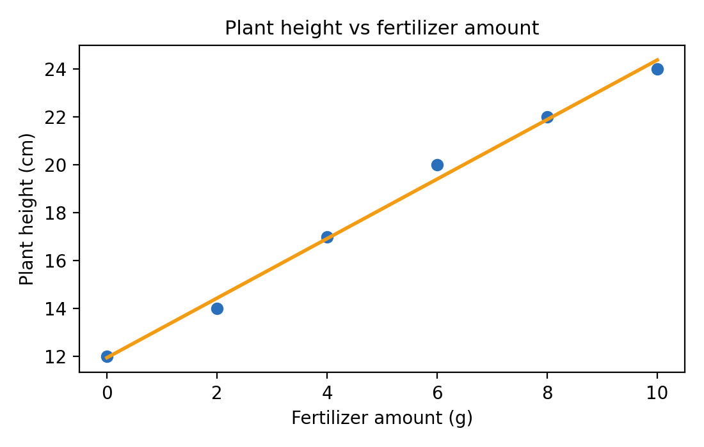
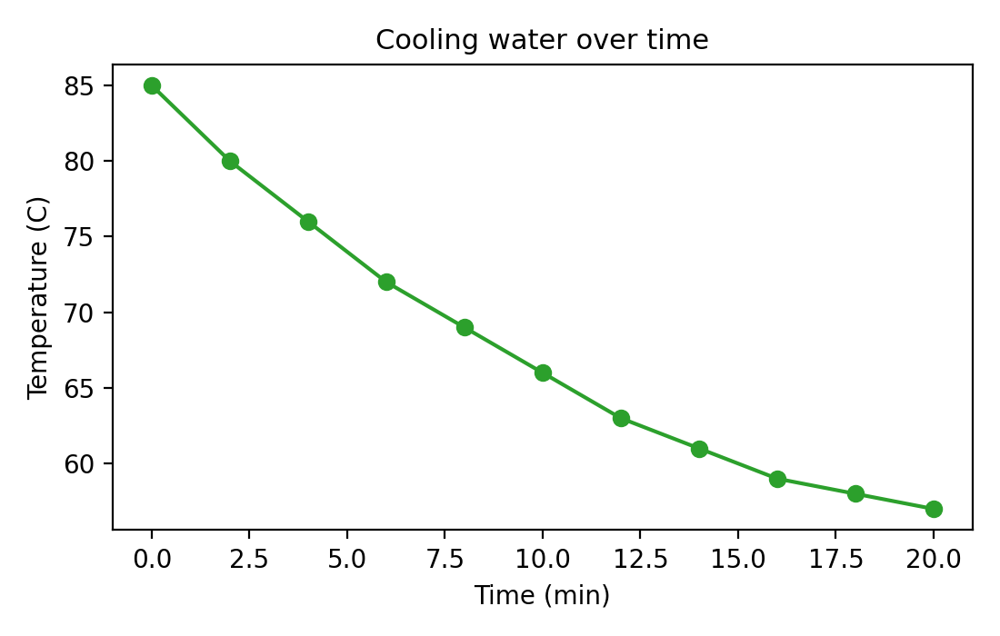
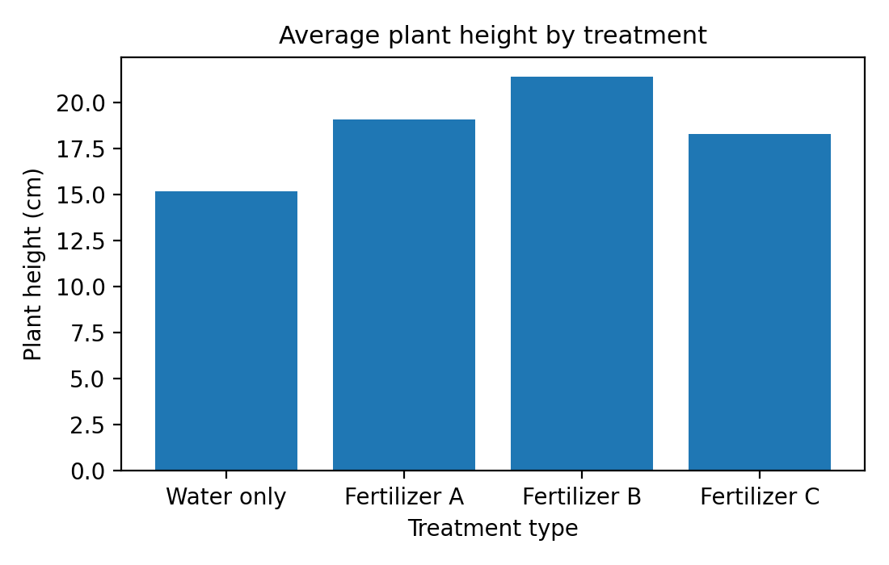
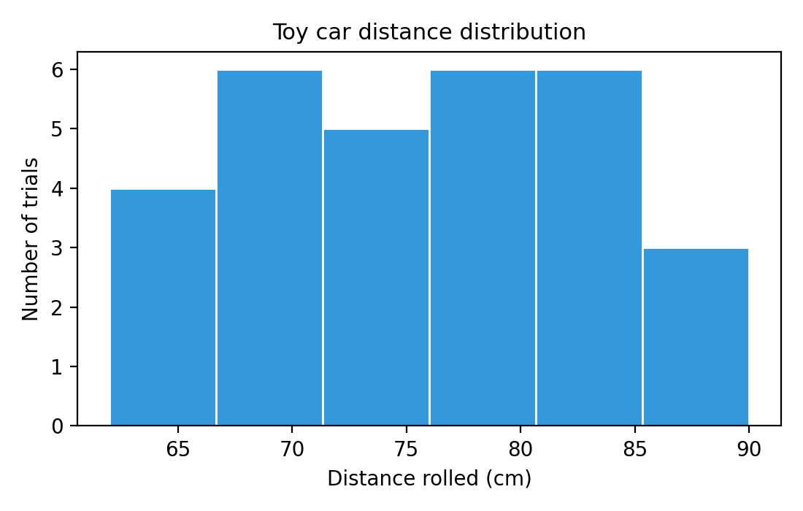
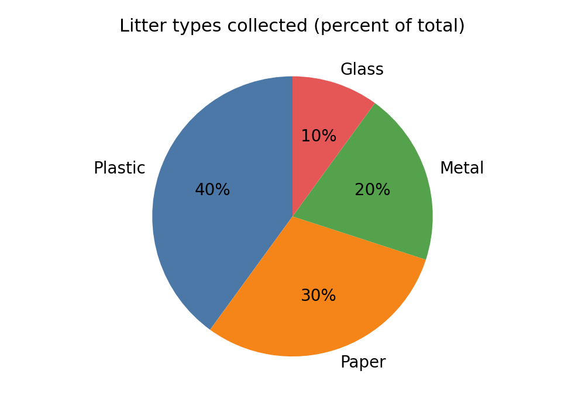

Use this guide to match your data to the right chart and explain your results clearly.
Variables: What Changed, What You Measured, What You Kept the Same
Simple definitions table
Variable type
What it means
Quick example
Manipulated (independent)
What you change on purpose
Amount of sunlight
Responding (dependent)
What you measure
Plant height
Controlled (constants)
What you keep the same
Same soil, same pot size
Trials/replicates
Repeating the test to be more reliable
Measure each plant 3 times
Example A: Sunlight and plant height
Manipulated: amount of sunlight each plant gets
Responding: plant height (cm)
Controlled: type of soil, pot size, water amount, plant species
Trials: measure several plants or measure the same plant multiple times
Example B: Ramp height and toy car distance
Manipulated: ramp height (cm)
Responding: distance the toy car rolls (cm)
Controlled: same car, same ramp surface, same release point
Trials: roll the car 3 or more times for each height
Mini-check
If I changed it on purpose -> manipulated
If I measured it -> responding
If I tried to keep it the same -> controlled
Why controls and trials matter: If you do not keep things the same, you cannot tell what really caused the change. Repeated trials help you see if a result is reliable or just a lucky accident.
Data Types: What Kind of Data Do You Have?
Continuous numbers
Numbers that go on a number line.
Examples: height, time, temperature.
Counts (discrete)
Whole numbers you count one by one.
Examples: number of seeds sprouted.
Categories (labels)
Names or groups, not numbers.
Examples: brand A/B/C, type of soil.
Time series
Measurements taken over time.
Examples: minute-by-minute or day-by-day data.
Continuous data can include decimals and can go anywhere on a number line. Discrete counts are whole numbers. Categories are names, not numbers, even if you can put them in order.
Choosing the Right Graph Type
Scatter Plot (with optional trendline)
Best for: two number-line variables (continuous) to see a relationship.
Axes: X = manipulated, Y = responding.
Example

Both axes are numbers with units, and the trendline helps you see the pattern.
Rule of thumb: If both variables are numbers, start with a scatter plot and label both axes.
Line Graph (time series)
Best for: data measured over time.
Axes: X = time, Y = measurement.
Example

Time is in order on the X-axis, and the line shows how temperature changes.
Rule of thumb: If time is on the X-axis, use a line graph and keep the scale honest.
Line Graph vs Scatter Plot (when to choose each)
Use a line graph when the X-axis is time or a true sequence (day-by-day, minute-by-minute).
Use a scatter plot when the X-axis is not time (like grams of fertilizer or ramp height).
A line implies the values flow from one point to the next. If that is not true, use scatter.
Bar Chart (compare categories)
Best for: comparing categories or named groups (non-numeric manipulated values).
Axes: X = categories, Y = numbers.
Example

Each bar is a different treatment (including a water-only control), and the y-axis shows plant height.
Rule of thumb: Use bar charts for categories. If the manipulated variable is numeric and ordered (like grams), use a scatter or line chart instead.
Histogram (show distribution)
Best for: many measurements of the same thing.
Axes: X = measurement values, Y = how many times those values appear.
Example

Many measurements show the shape of the data and the most common values.
Rule of thumb: Use a histogram when you have many measurements and choose a reasonable number of bins.
Pie Chart (parts of a whole)
Best for: showing how a whole is divided into categories that add up to 100%.
Axes: none; each slice is a percent of the total.
Good uses: percent of time spent on different tasks, percent of types of litter collected, percent of plants that survived vs died.
Not good for: trends over time, comparisons that are not parts of one whole, or data with many similar values.
Example

The chart shows one whole and each slice is labeled with a percent.
Rule of thumb: Use a pie chart only when all slices add to one whole and the differences are easy to see.